Encomendas · La Mesa Barcelona
Louça artesanal para restaurantes
Pratos, pratinhos e bowls de grés, feitos à mão no nosso ateliê da Barceloneta. Para comprar ou alugar, nos tamanhos e cores de que a sua cozinha precisa.

Duas ceramistas, um ateliê na Barceloneta
Somos a Lau e a Vick. Fazemos cada peça à mão, uma por uma, em grés de alta temperatura, no nosso ateliê. Trabalhamos sob encomenda para cozinhas que cuidam da apresentação: restaurantes de autor e bistrôs que querem que a louça fale da sua identidade.
- Peças únicasCada peça é modelada uma por uma. Não há duas iguais.
- Identidade na mesaO prato faz parte do que o cliente vê antes de provar qualquer coisa.
- Produção localTudo é feito em Barcelona.
- Cores combinadasOs esmaltes são escolhidos de acordo com o cardápio.
Formas por uso no salão
Quatro famílias pensadas para o serviço. Cada forma tem várias opções de cor e os tamanhos indicados são os das nossas peças; se você precisar de outros, nós fazemos.
Pratinhos
Para amuse-bouches, petiscos e entradas.
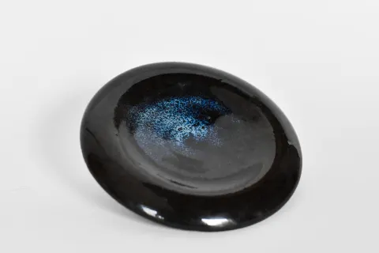
EntregaPratinho raso · Galaxia11 × 11 × 2 cm 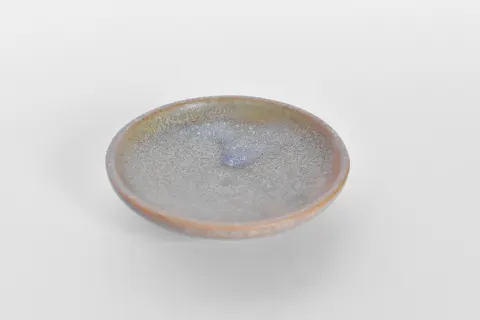
IntentoPratinho elevado · Verde Lago10 × 10 × 3 cm 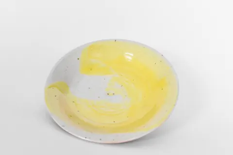
ApoyoPratinho raso · Pincelada Sol12 × 12 × 2 cm 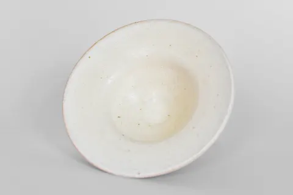
ElevarPratinho fundo · Nieve11 × 11 × 4 cm 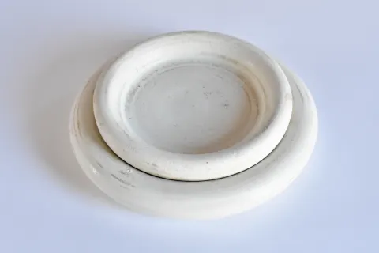
BurbujaPratinho raso · Nieve13 × 13 × 2 cm e 17 × 17 × 2 cm
Geométricos
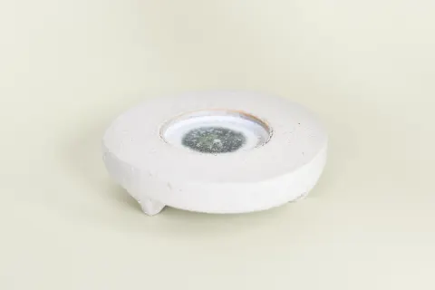
NúcleoPratinho baixo · Mar10 × 10 × 3 cm 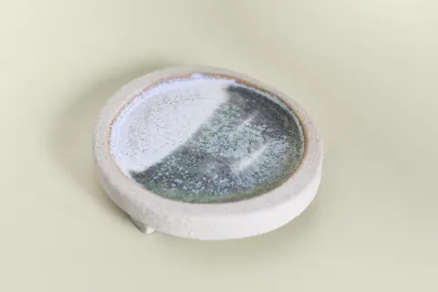
BasePratinho baixo · Mar10 × 10 × 3 cm 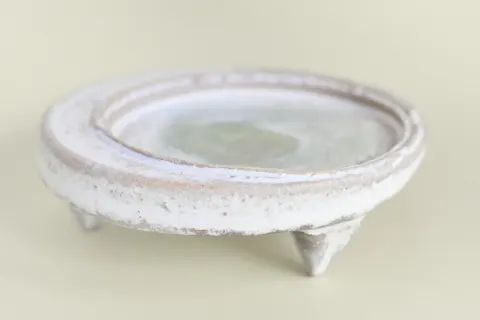
PirámidePratinho alto · Mar10 × 10 × 4 cm 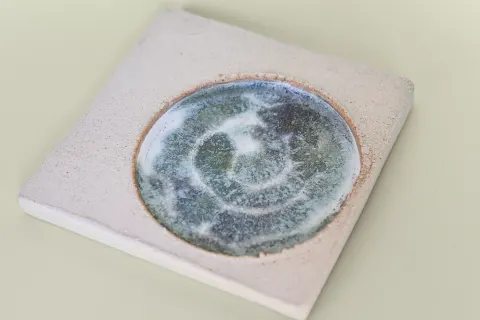
CuadradoPratinho raso · Mar14 × 14 × 1,5 cm
Alturas
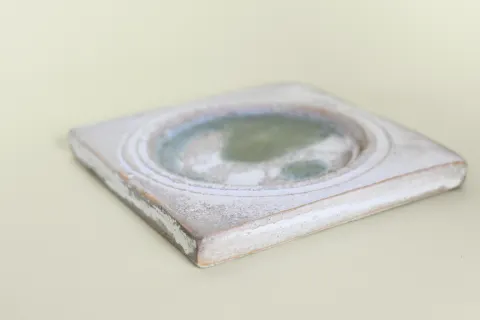
CuadradoPratinho raso14 × 14 × 1,5 cm 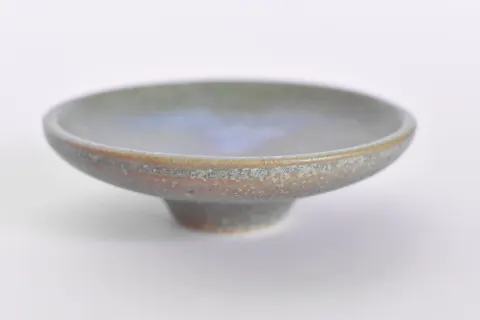
IntentoPratinho elevado10 × 10 × 3 cm 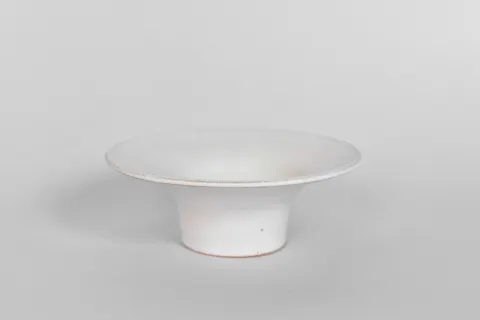
ElevarPratinho fundo11 × 11 × 4 cm
Pratos
Para pratos principais, entradas para compartilhar e pratos de apresentação.
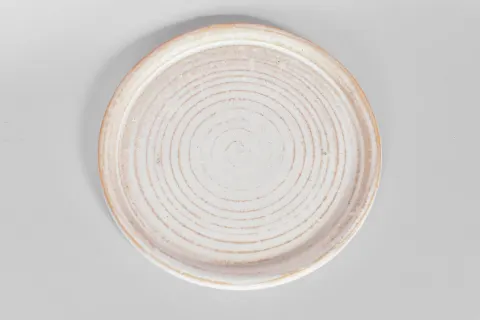
QuietudPrato raso · Nieve16 × 16 × 1 cm 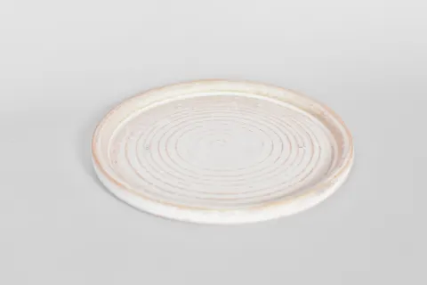
QuietudPerfil · Nieve16 × 16 × 1 cm 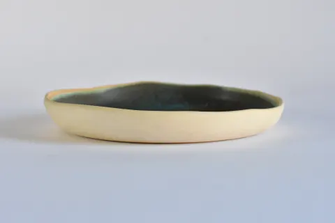
DescansoPrato com aba · Verde Piedra24 × 24 × 3 cm 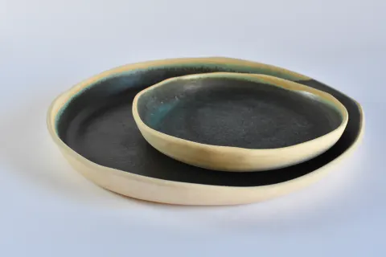
DescansoConjunto de dois tamanhos · Verde Piedra
Bowls
Para caldos, ensopados, massas, sobremesas e molhos.
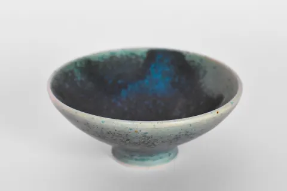
AfectoBowl pequeno · Verde Piedra10 × 10 × 4 cm 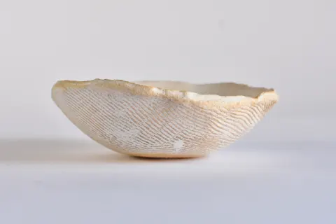
AtritoBowl pequeno · Nieve10,5 × 10,5 × 4 cm 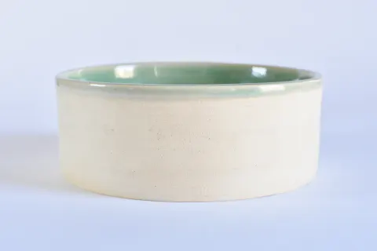
RoceBowl médio · Alma Verde Agua14 × 14 × 6 cm 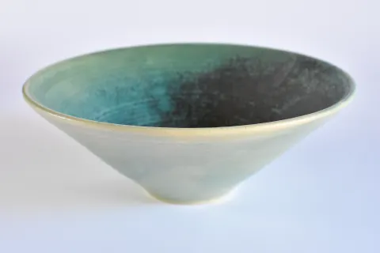
PromesaBowl grande · Verde Piedra21 × 21 × 8 cm 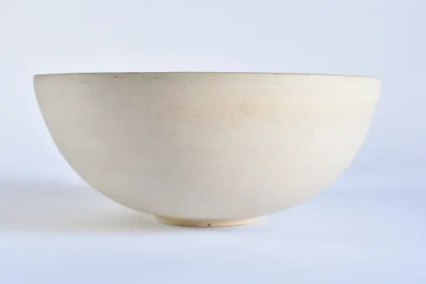
CharlaBowl grande · Natural20 × 20 × 9 cm 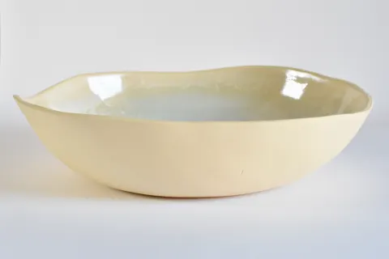
SusurroBowl grande · Cristal31 × 25 × 7 cm
Xícaras e copos
Para sopas, gaspacho, café e outras bebidas.
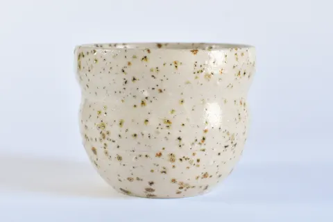
AbrazoXícara média · Puntitos8 × 8 × 7 cm 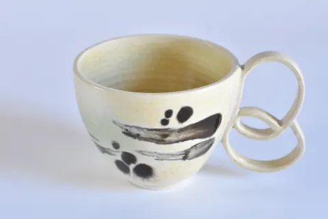
ParpadeoXícara média · Mariposa9 × 9 × 8 cm 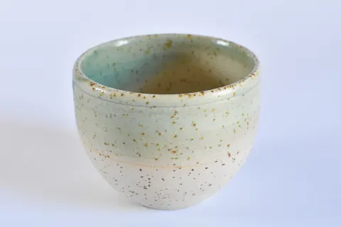
PausaXícara média · Verde Agua8 × 8 × 6 cm
Cores
Os esmaltes são escolhidos de acordo com o cardápio. Estes são os acabamentos com que trabalhamos hoje.
- Verde Piedra
- Nieve
- Cactus
- Cristal
- Galaxia
- Transparente
- Verde Lago
- Mariposa
- Medusa
- Borboleta
- Sol
- Carnaval
Os seus tamanhos, as suas cores
Qualquer peça pode ser feita nos seus tamanhos e qualquer forma nas suas cores. Partimos do seu cardápio e do seu salão: você nos conta sobre o prato, o passe e o espaço, e nós sugerimos formas, tamanhos e esmaltes.
É um projeto dedicado, com prazo e orçamento próprios. Se quiser ver e tocar as peças, visite o ateliê com hora marcada.
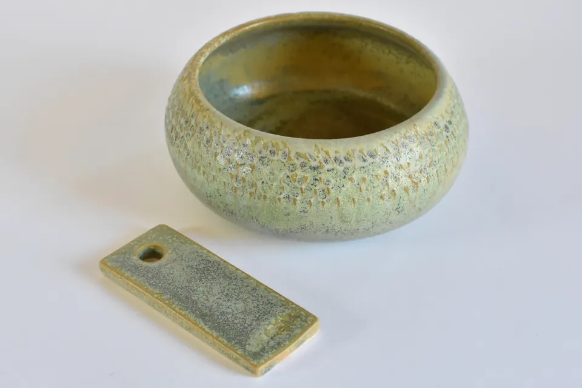
Compra ou aluguel
O preço fechado vem no orçamento, de acordo com formas, quantidades e cores.
Compra
As peças são suas, na quantidade de que você precisar.
- Sem pedido mínimo: a partir de uma peça.
- Descontos por volume em peças do mesmo tipo.
- Enviamos para toda a Europa.
Aluguel
Pensado para cardápios sazonais: troque a louça quando trocar o cardápio.
- Períodos de 4, 6 ou 12 meses. Quanto mais longo o período, menor o preço por peça.
- Depósito equivalente a uma mensalidade, devolvido no final.
- Quebras incluídas até 5% das peças.
- Apenas na região de Barcelona, com entrega e retirada incluídas.
Resistência e cuidados
- Lava-louças
- Sim
- Micro-ondas
- Sim
- Forno
- Não
- Pancadas fortes
- Não
- Contato com alimentos
- Seguro
São pensadas para alta gastronomia e bistrôs. Aguentam o serviço diário, mas não pancadas fortes: não são pratos de batalha.
Peças sob encomenda para casa e para presentear
Não é um restaurante? Também fazemos peças sob encomenda para particulares: louça para a sua casa, um conjunto de bowls, um presente de casamento ou uma peça na cor que você tem em mente.
Escreva para a gente com a sua ideia e informamos o prazo e o preço. Se preferir uma peça já pronta, dê uma olhada na nossa loja.
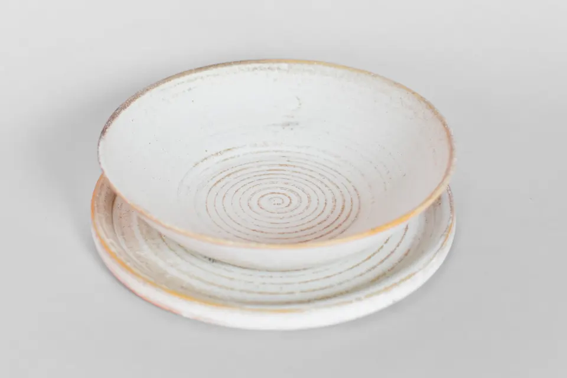
Como trabalhamos
Contato
Você escreve para a gente com o tipo de cozinha, as peças e as quantidades aproximadas.
Visita ou proposta
Você visita o ateliê para ver formas e esmaltes, ou enviamos fotos e uma proposta.
Orçamento
Fechado, com formas, tamanhos, cores e data de entrega.
Produção
Fazemos as peças à mão. O prazo é de algumas semanas, dependendo da quantidade e das cores.
Perguntas frequentes
Existe pedido mínimo?
Não. Fazemos desde uma única peça para a sua casa até séries completas para um restaurante.
Quanto tempo leva?
Algumas semanas, dependendo da quantidade, das formas e das cores. O orçamento inclui uma data concreta.
Podem ir à lava-louças e ao micro-ondas?
Sim, os dois. Ao forno, não. São seguras para contato com alimentos.
Vocês fazem um tamanho ou uma cor que não estão no catálogo?
Sim. Os tamanhos do catálogo são os das nossas peças; outros tamanhos e cores são feitos sob encomenda e orçados à parte.
Todas as peças são iguais?
Cada peça é feita à mão, por isso há pequenas diferenças de tom e de forma entre uma e outra. Dentro de uma série mantemos os tamanhos e o esmalte coerentes.
Como funciona o aluguel?
Você aluga as peças por 4, 6 ou 12 meses, com um depósito equivalente a uma mensalidade, devolvido no final. Está disponível apenas na região de Barcelona, com entrega e retirada incluídas.
E se uma peça alugada quebrar?
As quebras estão incluídas até 5% das peças. Acima disso, cada peça quebrada é cobrada pelo preço de compra.
Vocês enviam para fora de Barcelona?
Sim, enviamos para toda a Europa. O aluguel, por outro lado, só está disponível na região de Barcelona.
Posso visitar o ateliê?
Sim, com hora marcada. Estamos na Carrer de l'Atlàntida, 47, na Barceloneta.
Fale com a gente
Conte quais peças você precisa, quantas e para quando. Respondemos em até 24 horas.